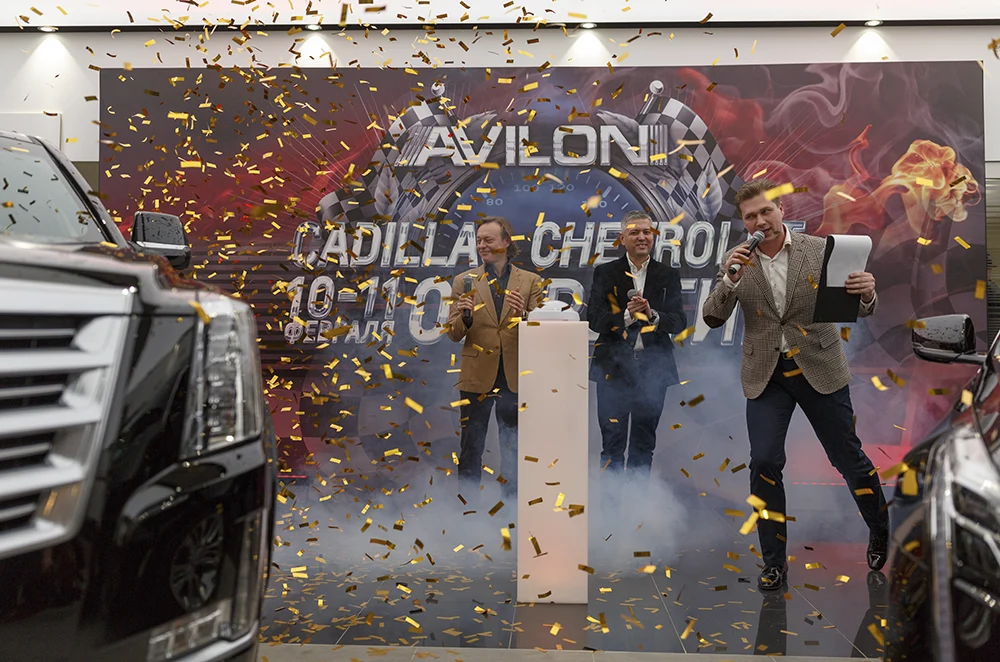
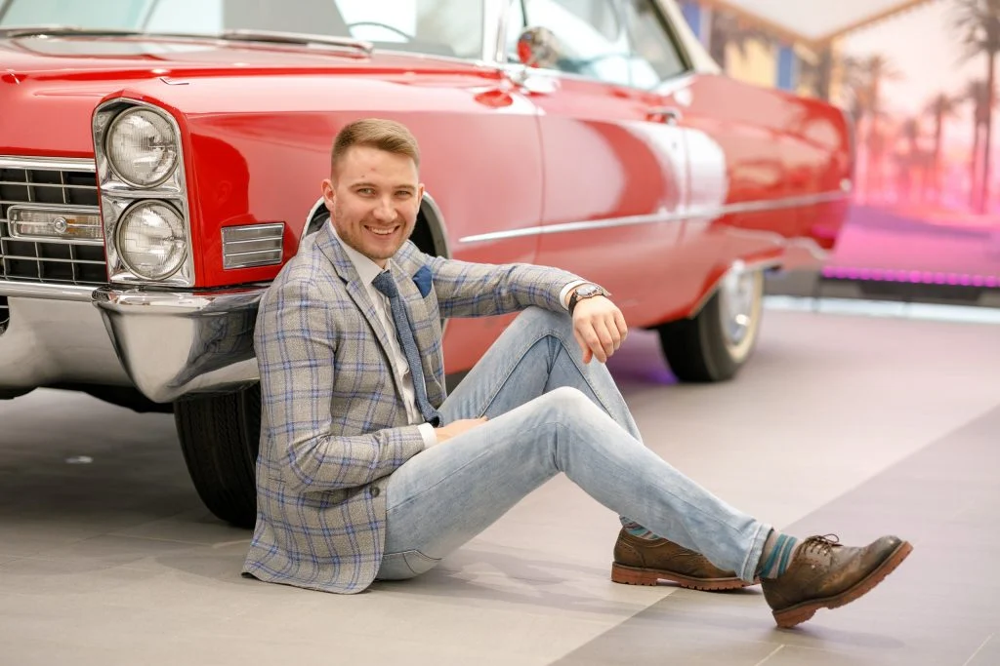
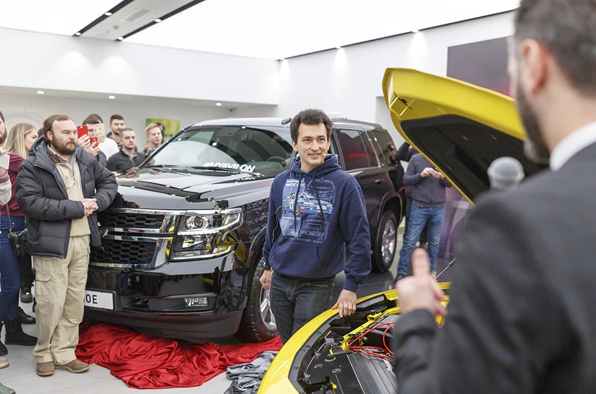
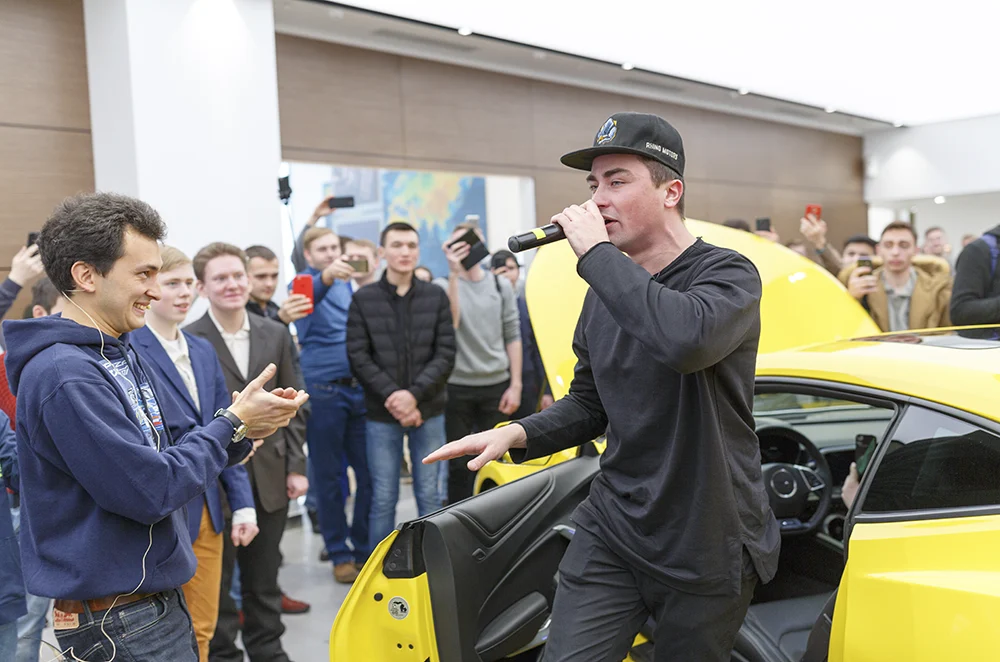
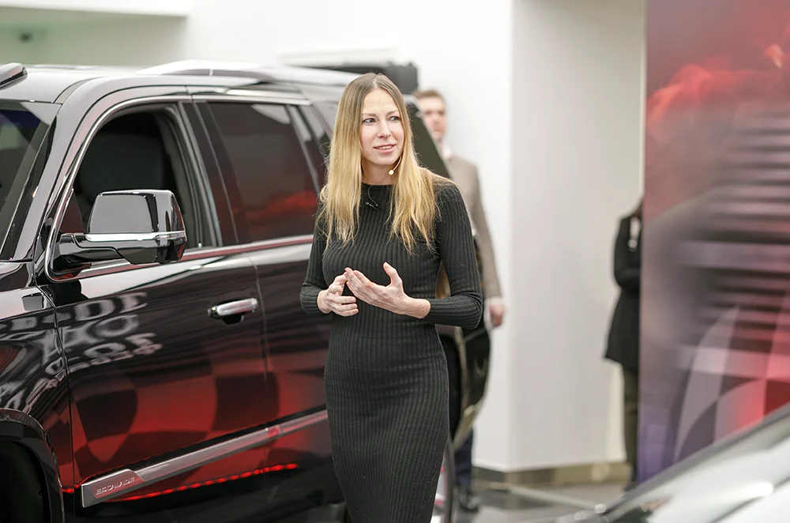
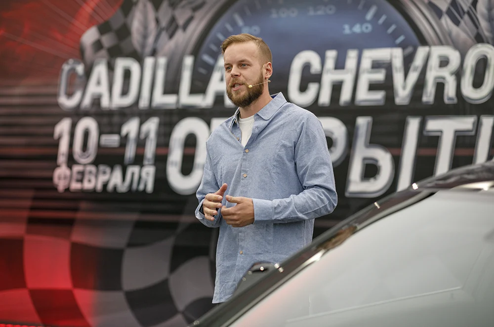
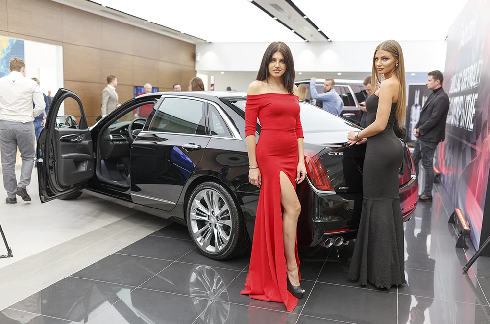
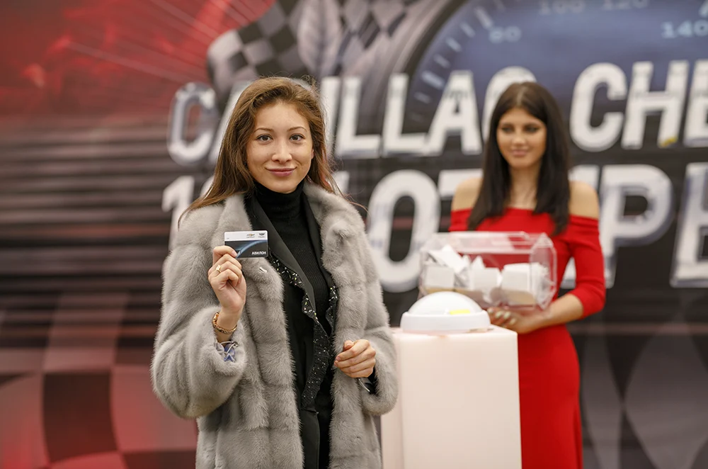
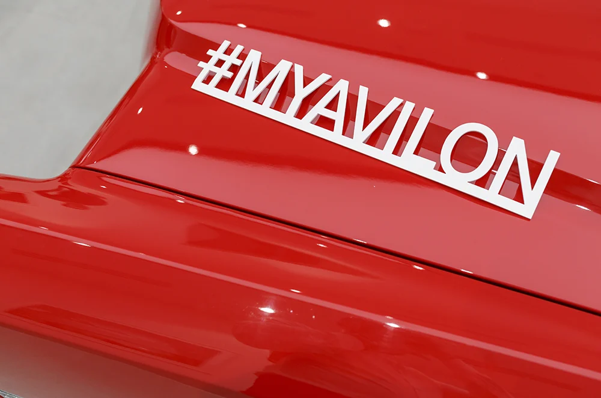
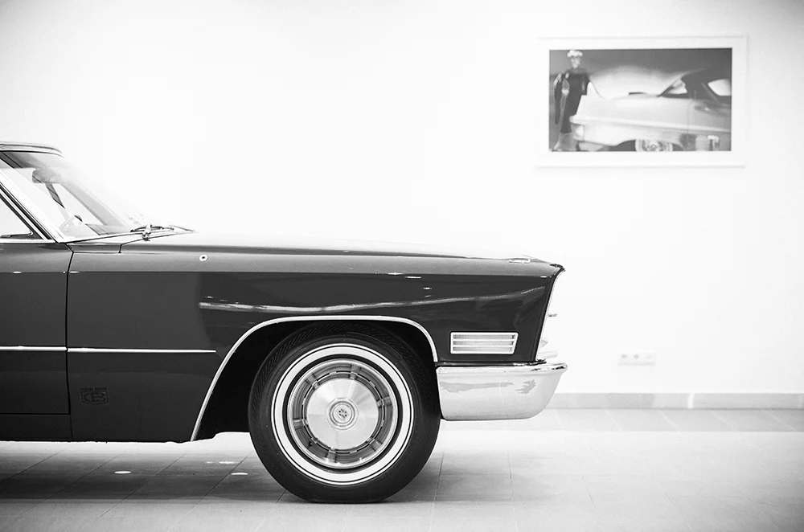

ОТКРЫТИЕ ДИЛЕРСКОГО ЦЕНТРА
Открытие,
о котором говорят.
Автомобили с характером, гости и блогеры — знакомство с новым дилерским центром Cadillac и Chevrolet AVILON.
Новый адрес.
Широкая аудитория.
Открытие дилерского центра должно было привлечь внимание и внутри площадки, и за её пределами. Задача SPACE — организовать событие и предложить подход к расширению его аудитории.
В центре решения — работа с блогерами: анонсы открытия, выступления на мероприятии и дальнейшее распространение видеоматериалов в СМИ и социальных сетях.
История марки —
вживую.
Отдельным акцентом стала инсталляция раритетного Cadillac. Классический автомобиль добавил экспозиции выразительный образ — узнаваемые линии, детали и ощущение другой эпохи.

Событие
продолжается в кадре.
Блогеры участвовали в программе и знакомили свою аудиторию с открытием. Фотографии и видеоматериалы связывали впечатления гостей с коммуникацией вокруг нового центра.
Церемония, автомобили и живое общение складывались в несколько сюжетов одного дня.
Автомобили.
Люди. Эмоции.








СЛЕДУЮЩИЙ ПРОЕКТ